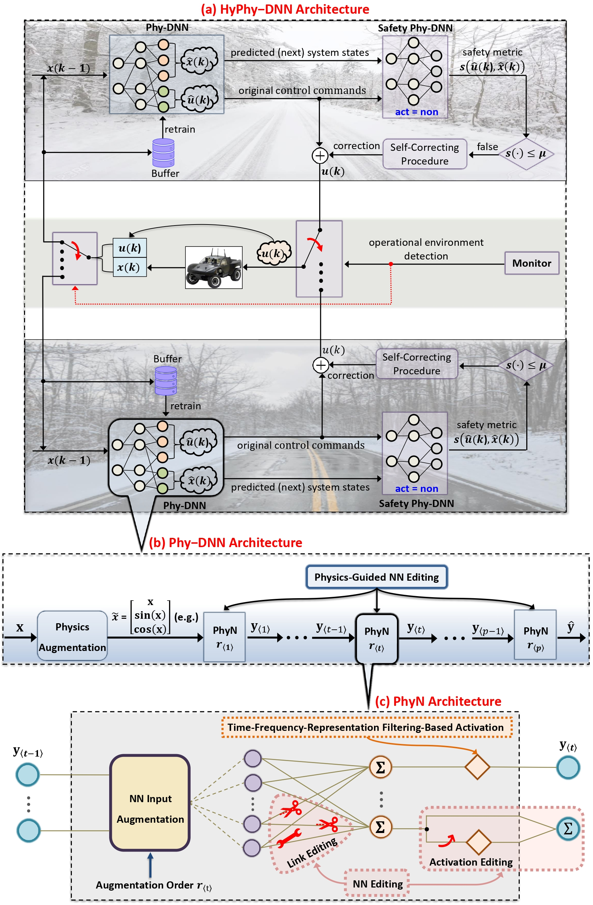
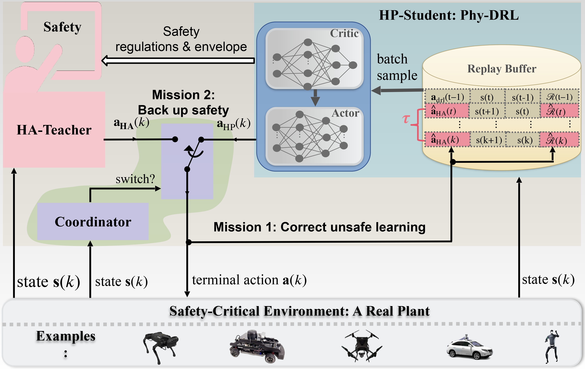

|
Research Projects
Physics-Model-Based Neural Networks Redesign for CPS Learning and Control (NSF)
|
 |
Deep neural networks (DNNs) have been integrated into cyber-physical systems (CPS), coining a new terminology as DNN-assisted CPS. Recent frequent incidents of such CPS overshadow its revolutionizing potential, especially for the safety- and time-critical CPS operating in unforeseen and dynamic environments. Meanwhile, purely data-driven DNNs applied to CPS can infer relations that violate physics laws, sometimes leading to catastrophic consequences. The challenges motivate us to investigate the redesign of DNN-assisted CPS. We propose the HyPhy-DNN: a hybrid self-correcting physics-enhanced DNN framework for to enhance the safety assurance of DNNs in non-stationary, time- and safety-critical applications. Compared with current research on physics-informed DNNs, the HyPhy-DNN has three unique innovations in
DNN redesign architecture:
Physics Augmentations of NN Inputs, which are able to (i) directly capture hard-to-learn non-linearities of physical quantities, such as kinetic energy and aerodynamic drag force, that
drive system dynamics, and (ii) embed Taylor series. Because of Taylor’s theorem, HyPhy-DNN can well represent nonlinear dynamics of physical systems characterized by partial
differential equations, and feature provable and controllable model accuracy.
Physics-Guided Neural Network Editing, which includes link editing and activation editing, for embedding the prior physical knowledge into HyPhy-DNN inside. Owning to the edit-
ing mechanism, HyPhy-DNN will strictly comply with well-validated physical knowledge at hand and maximally avoid spurious correlations.
Time-Frequency-Representation Filtering-Based Activations for enhancing the robustness of Phy-DNNs Activations, which allows HyPhy-DNN to filter out the noise of NN inputs that has the non-stationary distribution of frequency, using the behavior of conversion between the time domain and frequency domain.
|
Runtime Learning Machine (NVIDIA Academic Grant Program)
|
 |
This project aims to develop an innovative runtime learning machine designed explicitly for safety-critical robotic systems with learning capabilities. The learning machine facilitates real-time learning in actual environments for high-performance control tasks while ensuring verified safety. It leverages real-time sensor data from physical surroundings. Furthermore, it guarantees long-term safety by accommodating unexpected challenges and machine learning hallucinations. Our current focus is on applying this technology to quadruped robots. The appealing design combines Learning for Control and Control for Learning to enable high-performance runtime learning of the DRL agent in real plants, using real-time sensor data from real-time physical environments while prioritizing safety. The learning machine comprises HP-Student, HA-Teacher, and Coordinator. Within the runtime learing machine, Coordinator manages the interaction between HP-Student and HA-Teacher by monitoring the real-time system states about safety. Because of the Coordinator, our learning machine is also an automatic hierarchy learning mechanism. As a metaphor, HP-Student's runtime learning is like a student's journey. First, he learns from teachers in middle school, high school, college, etc., who have verified domain knowledge in subjects like physics and mathematics, to gain essential knowledge. Then, he delves deeper into specific areas during graduate studies to acquire expertise in those fields.
|
|